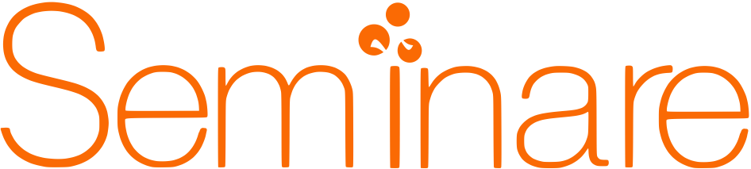

 Es un programa educativo de tres años de duración diseñado para adolescentes. Su misión es introducir a los alumnos a los mundos de la programación, el desarrollo de productos que solucionan problemas concretos y el emprendimiento.
La metodología que emplea es totalmente constructivista , centrada en el alumno y orientada a proyectos .
En una era en la que la educación ha sufrido cambios inesperados este programa se caracteriza por tener la posibilidad de ejecutarse totalmente en línea , teniendo módulos sincrónicos y asincrónicos . Lo que lo hace extremadamente flexible sin descuidar el carácter personalizado de la educación presencial que por supuesto sigue siendo la opción predeterminada del programa.
Durante los últimos 7 años el equipo de ha desarrollado pedagogía especial para enseñar programación a adolescentes, el modelo OCii ha sido exitoso generador de cientos de buenos desarrolladores y emprendedores adolescentes.
Un proyecto de corte constructivista se mide por las habilidades y competencias que desarrolla en los alumnos que lo cursan, la siguiente tabla explica algunas de las que estamos esperando florezcan en nuestros alumnos:
La estructura del programa es la misma a lo largo de los tres años y abarca la totalidad del ciclo escolar. Consta de tres módulos.
Es un modelo pedagógico con 7 años de desarrollo y probado con más de 1000 alumnos de 13 a 17 años. Es constructivista pues está diseñado para que los alumnos sean autodidactas, resuelvan retos, construyan productos y de esa forma aprendan la teoría. No requiere clases presenciales tipo ponencia. Las características del modelo se enlistan en las siglas:
Este diagrama explica cómo funciona el modelo a lo largo de una semana de trabajo.
La epidemia de COVID19 cambiará para siempre muchos sectores, incluido el educativo. ¿Cómo reaccionarán los mejores centros de enseñanza al catalizador en tecnologías, modelos y posibilidades que hemos tenido que adoptar de manera forzada? Adaptamos para aprovechar lo mejor de los dos mundos. Durante años habíamos estado muy adelantados en este tipo de modelos. Hoy las circunstancias han hecho evidente su valor.
El equipo de ha desarrollado una sólida plataforma donde se desarrolla el proyecto. A continuación se enlistan las características de los diferentes módulos de la plataforma:
Programación/proyectos guiados
Módulo de emprendimiento
El mejor proyecto que se implementa actualmente en Cedros y el mejor en los últimos 10 años--Diego Ledesma.
Headmaster, Escuela Mexicana Americana
Un proyecto que invita a la sinergia de las materias--Carlos Fabila.
Director Secundaria, Centro Escolar Cedros 2018
El mayor y más emocionante reto académico--Salvador Colíz.
al que se han enfrentado nuestros hijos
Padre de familia
The way these classes are taught in this program, should be the one and only way of teaching--Katherine Carter, AdvancED Certification 2018
Un programa que te prepara para la vida y no para la escuela--Santiago Sepúlveda,
Alumno egresado 2017
Este proyecto cambió mi vida--Erick Mazadiego,
Alumno egresado 2018